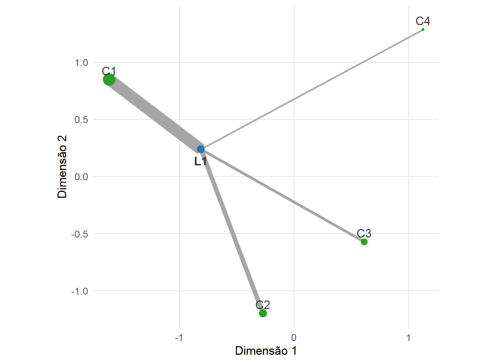
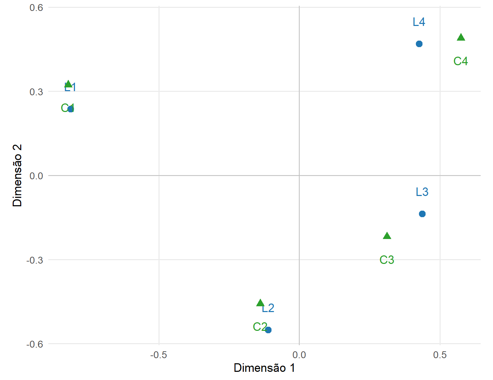

17 Formulação da Análise de Correspondência
A Análise de Correspondência representa geometricamente a associação entre as categorias de duas variáveis qualitativas a partir de uma tabela de contingência. A técnica compara os perfis observados com a estrutura correspondente à independência em uma geometria ponderada pelas frequências marginais (Greenacre, 2017).
Os desvios da independência são padronizados pelas massas e organizados em uma matriz cuja SVD fornece as dimensões da associação, suas inércias e as coordenadas das categorias de linhas e colunas.
O capítulo desenvolve a formulação matemática e estatística da Análise de Correspondência simples. Critérios operacionais de escolha da dimensão, interpretação aplicada de mapas, implementação computacional e extensões serão tratados posteriormente. Categorias suplementares serão apresentadas ao final como aprofundamento da geometria desenvolvida para as categorias ativas.
Os elementos da formulação são organizados na Tabela tbl-estrutura-correspondencia.
| Elemento | Objeto | Papel na análise |
|---|---|---|
| dados observados | tabela de contingência \(\mathbf N\) | registra as frequências conjuntas |
| distribuição observada | matriz \(\mathbf P\) | expressa frequências relativas |
| pesos marginais | massas \(\mathbf r\) e \(\mathbf c\) | determinam a importância relativa das categorias |
| representação interna | perfis de linhas e de colunas | descreve distribuições condicionais observadas |
| referência | independência | fornece a estrutura sem associação |
| geometria | distância qui-quadrado | compara perfis com ponderação pelas massas |
| estrutura matricial | desvios padronizados \(\mathbf Q_{\mathrm{CA}}\) | reúne os desvios da independência |
| solução | SVD de \(\mathbf Q_{\mathrm{CA}}\) | produz inércias e coordenadas |
17.1 O problema de associação em uma tabela de contingência
As duas variáveis analisadas são categóricas, conforme a distinção apresentada na sec-natureza-variaveis. Suas categorias não são tratadas como coordenadas quantitativas em \(\mathbb R^p\). A informação utilizada pela Análise de Correspondência é organizada pelas frequências conjuntas das categorias em uma tabela de contingência.
Considere duas variáveis qualitativas, uma com \(I\) categorias e outra com \(J\) categorias. As frequências observadas são organizadas na tabela
\[ \mathbf N = (n_{ij}) \in \mathbb N_0^{I\times J}, \]
em que
\[ n_{ij} \in \mathbb N_0 \]
representa a frequência conjunta observada da categoria \(i\) da variável das linhas com a categoria \(j\) da variável das colunas.
O total observado é
\[ n = \sum_{i=1}^{I} \sum_{j=1}^{J} n_{ij}, \qquad n>0. \tag{17.1}\]
A condição \(n>0\) permite definir a matriz de frequências relativas observadas
\[ \mathbf P = \frac{1}{n}\mathbf N = (p_{ij}) \in \mathbb R^{I\times J}. \tag{17.2}\]
Assim,
\[ p_{ij} = \frac{n_{ij}}{n} \geq 0 \]
e
\[ \sum_{i=1}^{I} \sum_{j=1}^{J} p_{ij} = 1. \]
A matriz \(\mathbf P\) descreve a distribuição relativa observada na tabela. Neste desenvolvimento geométrico, \(\mathbf P\) é construída diretamente a partir das frequências observadas. Uma distribuição conjunta populacional será introduzida somente quando o modelo probabilístico para a tabela for considerado na seção inferencial.
A análise procura determinar como \(\mathbf P\) se afasta da estrutura correspondente à independência e representar esse afastamento em poucas dimensões.
A tabela possui duas leituras complementares. Comparando as linhas, investigam-se diferenças entre as distribuições das categorias das colunas condicionadas a cada linha. Comparando as colunas, investigam-se diferenças entre as distribuições das categorias das linhas condicionadas a cada coluna.
17.2 Frequências marginais, massas e perfis
As frequências marginais relativas determinam os pesos utilizados na geometria da Análise de Correspondência.
Definição 17.1 (Massas de linhas e colunas) Considere uma matriz de frequências relativas
\[ \mathbf P = (p_{ij}) \in \mathbb R^{I\times J}, \]
com
\[ p_{ij}\geq0 \]
e
\[ \sum_{i=1}^{I} \sum_{j=1}^{J} p_{ij} = 1. \]
As massas das linhas são as frequências relativas marginais
\[ r_i = \sum_{j=1}^{J} p_{ij}, \qquad i=1,\ldots,I, \]
e as massas das colunas são
\[ c_j = \sum_{i=1}^{I} p_{ij}, \qquad j=1,\ldots,J. \]
Em forma vetorial,
\[ \mathbf r = \mathbf P\mathbf1_J \in \mathbb R^I \]
e
\[ \mathbf c = \mathbf P^\top\mathbf1_I \in \mathbb R^J. \]
Como a soma dos elementos de \(\mathbf P\) é igual a \(1\),
\[ \mathbf1_I^\top\mathbf r = \mathbf1_J^\top\mathbf c = 1. \]
As matrizes diagonais das massas são
\[ \mathbf D_r = \operatorname{diag} (r_1,\ldots,r_I) \in \mathbb R^{I\times I} \]
e
\[ \mathbf D_c = \operatorname{diag} (c_1,\ldots,c_J) \in \mathbb R^{J\times J}. \]
A definição admite massas nulas. A geometria ativa da Análise de Correspondência, entretanto, utiliza inversas e raízes inversas dessas matrizes. No desenvolvimento do capítulo serão consideradas categorias ativas com
\[ r_i>0, \qquad i=1,\ldots,I, \]
e
\[ c_j>0, \qquad j=1,\ldots,J. \tag{17.3}\]
Categorias de massa nula não possuem perfis definidos e não participam da geometria ativa. Essa situação será retomada nos limites da representação.
17.2.1 Distribuições condicionais observadas
A Análise de Correspondência compara distribuições condicionais observadas, denominadas perfis.
Definição 17.2 (Perfis de linhas e de colunas) Considere
\[ \mathbf P = (p_{ij}) \in \mathbb R^{I\times J} \]
uma matriz de frequências relativas com massas de linhas e colunas dadas por Definição def-massas-correspondencia.
Para uma linha \(i\) com
\[ r_i>0, \]
o perfil da linha \(i\) é
\[ \mathbf p_{i\mid\cdot} = \begin{pmatrix} \dfrac{p_{i1}}{r_i}\\ \vdots\\ \dfrac{p_{iJ}}{r_i} \end{pmatrix} \in \mathbb R^J. \tag{17.4}\]
Para uma coluna \(j\) com
\[ c_j>0, \]
o perfil da coluna \(j\) é
\[ \mathbf p_{\cdot\mid j} = \begin{pmatrix} \dfrac{p_{1j}}{c_j}\\ \vdots\\ \dfrac{p_{Ij}}{c_j} \end{pmatrix} \in \mathbb R^I. \tag{17.5}\]
Cada perfil possui soma unitária:
\[ \mathbf1_J^\top \mathbf p_{i\mid\cdot} = 1 \]
e
\[ \mathbf1_I^\top \mathbf p_{\cdot\mid j} = 1. \]
Sob Equação eq-massas-positivas-ca, os perfis de linhas podem ser reunidos na matriz
\[ \mathbf P^{(r)} = \mathbf D_r^{-1} \mathbf P \in \mathbb R^{I\times J}, \tag{17.6}\]
enquanto os perfis de colunas são organizados em
\[ \mathbf P^{(c)} = \mathbf D_c^{-1} \mathbf P^\top \in \mathbb R^{J\times I}. \tag{17.7}\]
O perfil médio das linhas, ponderado pelas massas \(r_i\), é
\[ \sum_{i=1}^{I} r_i \mathbf p_{i\mid\cdot} = \mathbf c, \tag{17.8}\]
pois, para cada componente \(j\),
\[ \sum_{i=1}^{I} r_i \frac{p_{ij}}{r_i} = \sum_{i=1}^{I} p_{ij} = c_j. \]
De forma dual,
\[ \sum_{j=1}^{J} c_j \mathbf p_{\cdot\mid j} = \mathbf r. \tag{17.9}\]
Assim, \(\mathbf c\) é o centro ponderado da nuvem dos perfis de linhas e \(\mathbf r\) é o centro ponderado da nuvem dos perfis de colunas.
17.2.2 Independência como referência
Para a distribuição relativa observada, a estrutura de independência associada às marginais \(\mathbf r\) e \(\mathbf c\) é
\[ p_{ij} = r_ic_j, \tag{17.10}\]
ou, em forma matricial,
\[ \mathbf P = \mathbf r\mathbf c^\top. \tag{17.11}\]
Nesse caso, como as massas ativas são positivas,
\[ \frac{p_{ij}}{r_i} = c_j, \]
de modo que
\[ \mathbf p_{i\mid\cdot} = \mathbf c \]
para todas as linhas.
Analogamente,
\[ \frac{p_{ij}}{c_j} = r_i, \]
e todos os perfis de colunas coincidem com
\[ \mathbf r. \]
A independência corresponde, portanto, ao colapso de cada nuvem de perfis em seu respectivo centro.
Quando
\[ \mathbf P \neq \mathbf r\mathbf c^\top, \]
as diferenças
\[ p_{ij}-r_ic_j \]
representam os desvios observados em relação à estrutura de independência.
Esses desvios ainda não levam em conta a importância relativa das marginais. A geometria da Análise de Correspondência surge ao ponderá-los pelas massas das categorias.
17.3 Geometria dos perfis
A Análise de Correspondência compara os perfis utilizando uma geometria ponderada pelas massas marginais.
No Módulo 1, o produto interno induzido e sua norma foram definidos em Definição def-produto-interno-induzido e Definição def-norma-induzida. Sob Equação eq-massas-positivas-ca,
\[ \mathbf D_c^{-1} \]
e
\[ \mathbf D_r^{-1} \]
são matrizes diagonais positivas definidas e, portanto, definem produtos internos nos espaços de perfis de linhas e de colunas.
Essa estrutura conduz à distância qui-quadrado.
Definição 17.3 (Distância qui-quadrado entre perfis) Considere uma matriz
\[ \mathbf P \in \mathbb R^{I\times J} \]
de frequências relativas cujas massas satisfazem
\[ r_i>0, \qquad i=1,\ldots,I, \]
e
\[ c_j>0, \qquad j=1,\ldots,J. \]
Se
\[ \mathbf p_{i\mid\cdot}, \mathbf p_{i'\mid\cdot} \in \mathbb R^J \]
são dois perfis de linhas, sua distância qui-quadrado é definida por
\[ d_{\chi^2}^2(i,i') = \left( \mathbf p_{i\mid\cdot} - \mathbf p_{i'\mid\cdot} \right)^\top \mathbf D_c^{-1} \left( \mathbf p_{i\mid\cdot} - \mathbf p_{i'\mid\cdot} \right). \tag{17.12}\]
Equivalentemente,
\[ d_{\chi^2}^2(i,i') = \sum_{j=1}^{J} \frac{1}{c_j} \left( \frac{p_{ij}}{r_i} - \frac{p_{i'j}}{r_{i'}} \right)^2. \]
Se
\[ \mathbf p_{\cdot\mid j}, \mathbf p_{\cdot\mid j'} \in \mathbb R^I \]
são dois perfis de colunas, sua distância qui-quadrado é
\[ d_{\chi^2}^2(j,j') = \left( \mathbf p_{\cdot\mid j} - \mathbf p_{\cdot\mid j'} \right)^\top \mathbf D_r^{-1} \left( \mathbf p_{\cdot\mid j} - \mathbf p_{\cdot\mid j'} \right). \tag{17.13}\]
Equivalentemente,
\[ d_{\chi^2}^2(j,j') = \sum_{i=1}^{I} \frac{1}{r_i} \left( \frac{p_{ij}}{c_j} - \frac{p_{ij'}}{c_{j'}} \right)^2. \]
A distância qui-quadrado é, portanto, uma distância euclidiana em coordenadas reescaladas pelas massas. Para as linhas,
\[ d_{\chi^2}(i,i') = \left\| \mathbf D_c^{-1/2} \left( \mathbf p_{i\mid\cdot} - \mathbf p_{i'\mid\cdot} \right) \right\|, \]
e, para as colunas,
\[ d_{\chi^2}(j,j') = \left\| \mathbf D_r^{-1/2} \left( \mathbf p_{\cdot\mid j} - \mathbf p_{\cdot\mid j'} \right) \right\|. \]
As ponderações
\[ \frac{1}{c_j} \]
e
\[ \frac{1}{r_i} \]
fazem com que uma mesma diferença absoluta entre perfis tenha peso maior quando ocorre em uma categoria de menor massa.
A distância de uma linha ao centro da nuvem é
\[ d_{\chi^2}^2(i,\mathbf c) = \left( \mathbf p_{i\mid\cdot} - \mathbf c \right)^\top \mathbf D_c^{-1} \left( \mathbf p_{i\mid\cdot} - \mathbf c \right), \tag{17.14}\]
ou, utilizando
\[ \frac{p_{ij}}{r_i} - c_j = \frac{ p_{ij}-r_ic_j }{ r_i }, \]
tem-se
\[ d_{\chi^2}^2(i,\mathbf c) = \sum_{j=1}^{J} \frac{ (p_{ij}-r_ic_j)^2 }{ r_i^2c_j }. \tag{17.15}\]
De forma dual,
\[ d_{\chi^2}^2(j,\mathbf r) = \sum_{i=1}^{I} \frac{ (p_{ij}-r_ic_j)^2 }{ c_j^2r_i }. \tag{17.16}\]
17.4 Inércia e afastamento da independência
Definição 17.4 (Inércia total) Considere uma matriz de frequências relativas
\[ \mathbf P = (p_{ij}) \in \mathbb R^{I\times J} \]
com massas de linhas e colunas estritamente positivas.
A inércia total da tabela é a dispersão qui-quadrado ponderada dos perfis de linhas em torno de seu centro \(\mathbf c\):
\[ \mathcal I = \sum_{i=1}^{I} r_i d_{\chi^2}^2(i,\mathbf c). \tag{17.17}\]
Utilizando Equação eq-distancia-linha-independencia-ca,
\[ \mathcal I = \sum_{i=1}^{I} \sum_{j=1}^{J} \frac{ (p_{ij}-r_ic_j)^2 }{ r_ic_j }. \tag{17.18}\]
De forma dual,
\[ \mathcal I = \sum_{j=1}^{J} c_j d_{\chi^2}^2(j,\mathbf r). \tag{17.19}\]
Como todos os termos em Equação eq-inercia-celulas-ca são não negativos,
\[ \mathcal I=0 \]
se, e somente se,
\[ p_{ij}=r_ic_j \]
para todas as células, ou equivalentemente,
\[ \mathbf P = \mathbf r\mathbf c^\top. \]
A inércia quantifica, portanto, o afastamento global da distribuição relativa observada em relação à estrutura de independência na geometria qui-quadrado.
17.5 Padronização dos desvios da independência
A expressão de Equação eq-inercia-celulas-ca sugere reunir os desvios
\[ p_{ij}-r_ic_j \]
em uma única matriz, padronizando-os pelas massas correspondentes.
Definição 17.5 (Matriz de desvios padronizados) Considere
\[ \mathbf P = (p_{ij}) \in \mathbb R^{I\times J} \]
uma matriz de frequências relativas cujas massas
\[ r_i>0, \qquad i=1,\ldots,I, \]
e
\[ c_j>0, \qquad j=1,\ldots,J, \]
são estritamente positivas.
A matriz de desvios padronizados da Análise de Correspondência é
\[ \mathbf Q_{\mathrm{CA}} = \mathbf D_r^{-1/2} \left( \mathbf P - \mathbf r\mathbf c^\top \right) \mathbf D_c^{-1/2} \in \mathbb R^{I\times J}. \tag{17.20}\]
Seu elemento \((i,j)\) é
\[ q_{ij} = \frac{ p_{ij}-r_ic_j }{ \sqrt{r_ic_j} }. \tag{17.21}\]
A matriz \(\mathbf Q_{\mathrm{CA}}\) representa, em coordenadas ponderadas, os desvios da distribuição observada em relação à independência.
Ela também possui restrições lineares decorrentes das próprias marginais. Como
\[ \mathbf P\mathbf1_J = \mathbf r \]
e
\[ \mathbf c^\top\mathbf1_J = 1, \]
segue que
\[ \begin{aligned} \mathbf Q_{\mathrm{CA}} \mathbf D_c^{1/2} \mathbf1_J &= \mathbf D_r^{-1/2} \left( \mathbf P - \mathbf r\mathbf c^\top \right) \mathbf1_J \\ &= \mathbf D_r^{-1/2} \left( \mathbf r-\mathbf r \right) \\ &= \mathbf0. \end{aligned} \tag{17.22}\]
Analogamente,
\[ \mathbf Q_{\mathrm{CA}}^\top \mathbf D_r^{1/2} \mathbf1_I = \mathbf0. \tag{17.23}\]
Como
\[ \mathbf D_c^{1/2}\mathbf1_J \neq \mathbf0 \]
e
\[ \mathbf D_r^{1/2}\mathbf1_I \neq \mathbf0 \]
sob massas positivas, \(\mathbf Q_{\mathrm{CA}}\) possui um vetor não nulo em seu núcleo à direita e um vetor não nulo no núcleo de sua transposta. Portanto,
\[ \operatorname{posto} \left( \mathbf Q_{\mathrm{CA}} \right) \leq J-1 \]
e
\[ \operatorname{posto} \left( \mathbf Q_{\mathrm{CA}} \right) \leq I-1. \]
Consequentemente,
\[ \operatorname{posto} \left( \mathbf Q_{\mathrm{CA}} \right) \leq \min \left( I-1, J-1 \right). \tag{17.24}\]
Essa restrição explica por que a Análise de Correspondência possui, no máximo,
\[ \min \left( I-1, J-1 \right) \]
dimensões não nulas.
17.5.1 Inércia como norma matricial
Pela definição de \(\mathbf Q_{\mathrm{CA}}\) e pela norma de Frobenius de Definição def-norma-frobenius,
\[ \begin{aligned} \left\| \mathbf Q_{\mathrm{CA}} \right\|_F^2 &= \sum_{i=1}^{I} \sum_{j=1}^{J} q_{ij}^2 \\ &= \sum_{i=1}^{I} \sum_{j=1}^{J} \frac{ (p_{ij}-r_ic_j)^2 }{ r_ic_j }. \end{aligned} \]
Por Equação eq-inercia-celulas-ca,
\[ \mathcal I = \left\| \mathbf Q_{\mathrm{CA}} \right\|_F^2. \tag{17.25}\]
Proposição 17.1 (Formas equivalentes da inércia) Sob massas de linhas e colunas estritamente positivas,
\[ \mathcal I = \sum_{i=1}^{I} r_i d_{\chi^2}^2(i,\mathbf c) = \sum_{j=1}^{J} c_j d_{\chi^2}^2(j,\mathbf r) \]
e
\[ \mathcal I = \sum_{i=1}^{I} \sum_{j=1}^{J} \frac{ (p_{ij}-r_ic_j)^2 }{ r_ic_j } = \left\| \mathbf Q_{\mathrm{CA}} \right\|_F^2. \]
A mesma quantidade possui, assim, três interpretações compatíveis: dispersão da nuvem de linhas, dispersão da nuvem de colunas e magnitude matricial dos desvios padronizados da independência.
17.6 Relação algébrica com a estatística qui-quadrado
Para a tabela observada, a estatística de Pearson calculada a partir das frequências marginais é
\[ \chi^2 = \sum_{i=1}^{I} \sum_{j=1}^{J} \frac{ (n_{ij}-nr_ic_j)^2 }{ nr_ic_j }. \tag{17.26}\]
Como
\[ n_{ij} = np_{ij}, \]
tem-se
\[ \begin{aligned} \chi^2 &= \sum_{i=1}^{I} \sum_{j=1}^{J} \frac{ n^2 (p_{ij}-r_ic_j)^2 }{ nr_ic_j } \\ &= n \sum_{i=1}^{I} \sum_{j=1}^{J} \frac{ (p_{ij}-r_ic_j)^2 }{ r_ic_j }. \end{aligned} \]
Por Equação eq-inercia-celulas-ca,
\[ \chi^2 = n\mathcal I. \tag{17.27}\]
A identidade
\[ \chi^2=n\mathcal I \]
é algébrica e exata para a tabela observada. Ela não depende de normalidade multivariada nem, por si só, de uma aproximação assintótica.
Sua interpretação como estatística de teste exige um modelo probabilístico para a geração da tabela e será retomada na seção de formulação inferencial. A inércia e a identidade acima pertencem à estrutura descritiva e geométrica da Análise de Correspondência, enquanto a distribuição de referência de \(\chi^2\) pertence à inferência.
17.7 Formulação pela decomposição em valores singulares
A matriz de desvios padronizados
\[ \mathbf Q_{\mathrm{CA}} \in \mathbb R^{I\times J} \]
é, em geral, retangular. Sua decomposição utiliza diretamente a SVD desenvolvida no Módulo 1.
Defina
\[ L = \operatorname{posto} \left( \mathbf Q_{\mathrm{CA}} \right). \]
Por Equação eq-posto-maximo-ca,
\[ 0 \leq L \leq \min \left( I-1, J-1 \right). \]
Se
\[ L=0, \]
então
\[ \mathbf Q_{\mathrm{CA}} = \mathbf0, \]
e, por Proposição prp-inercia-matriz-ca,
\[ \mathcal I=0. \]
Nesse caso, a distribuição relativa observada coincide com a estrutura de independência,
\[ \mathbf P = \mathbf r\mathbf c^\top, \]
e não existem dimensões não nulas de associação a decompor.
Considere, portanto, no restante desta seção,
\[ L\geq1. \]
Pela SVD compacta de Definição def-svd-compacta,
\[ \mathbf Q_{\mathrm{CA}} = \mathbf U \mathbf D \mathbf V^\top, \tag{17.28}\]
com
\[ \mathbf U \in \mathbb R^{I\times L}, \qquad \mathbf D \in \mathbb R^{L\times L}, \qquad \mathbf V \in \mathbb R^{J\times L}, \]
satisfazendo
\[ \mathbf U^\top \mathbf U = \mathbf I_L, \]
\[ \mathbf V^\top \mathbf V = \mathbf I_L \]
e
\[ \mathbf D = \operatorname{diag} \left( d_1,\ldots,d_L \right), \]
em que
\[ d_1 \geq d_2 \geq \cdots \geq d_L > 0. \]
Os vetores singulares à esquerda descrevem direções no espaço ponderado das categorias das linhas, enquanto os vetores singulares à direita descrevem as direções correspondentes no espaço ponderado das categorias das colunas.
A SVD acopla essas duas representações por meio dos mesmos valores singulares.
17.7.1 Decomposição da inércia
Definição 17.6 (Inércia principal) Considere a SVD compacta
\[ \mathbf Q_{\mathrm{CA}} = \mathbf U \mathbf D \mathbf V^\top \]
de uma matriz de desvios padronizados com posto
\[ L\geq1, \]
em que
\[ \mathbf D = \operatorname{diag} \left( d_1,\ldots,d_L \right) \]
e
\[ d_\ell>0, \qquad \ell=1,\ldots,L. \]
A inércia principal da dimensão \(\ell\) é
\[ \lambda_\ell = d_\ell^2, \qquad \ell=1,\ldots,L. \tag{17.29}\]
Pela relação entre a norma de Frobenius e os valores singulares estabelecida em Proposição prp-normas-valores-singulares,
\[ \left\| \mathbf Q_{\mathrm{CA}} \right\|_F^2 = \sum_{\ell=1}^{L} d_\ell^2. \]
Como
\[ \mathcal I = \left\| \mathbf Q_{\mathrm{CA}} \right\|_F^2 \]
por Equação eq-inercia-frobenius-ca, segue que
\[ \mathcal I = \sum_{\ell=1}^{L} \lambda_\ell. \tag{17.30}\]
A SVD decompõe, portanto, a inércia total em parcelas não negativas associadas às diferentes dimensões da associação.
Utilizando a identidade exata
\[ \chi^2 = n\mathcal I \]
de Equação eq-qui-quadrado-inercia-ca,
\[ \chi^2 = n \sum_{\ell=1}^{L} \lambda_\ell. \tag{17.31}\]
Essa igualdade continua sendo uma decomposição algébrica da estatística observada. A distribuição inferencial de \(\chi^2\) será considerada posteriormente e não é necessária para definir as inércias principais.
Como
\[ \lambda_\ell>0, \]
a proporção da inércia associada à dimensão \(\ell\) é
\[ \frac{ \lambda_\ell }{ \displaystyle \sum_{h=1}^{L} \lambda_h }. \tag{17.32}\]
Para
\[ 1 \leq k \leq L, \]
a proporção acumulada da inércia representada pelas primeiras \(k\) dimensões é
\[ \frac{ \displaystyle \sum_{\ell=1}^{k} \lambda_\ell }{ \displaystyle \sum_{\ell=1}^{L} \lambda_\ell }. \tag{17.33}\]
Essas proporções descrevem a decomposição da inércia qui-quadrado. Embora a expressão seja formalmente semelhante à proporção de variância explicada da ACP, o objeto decomposto é diferente: na Análise de Correspondência, decompõem-se os desvios padronizados da independência.
17.7.2 Representação em dimensão reduzida
Considere
\[ 1 \leq k < L. \]
Defina
\[ \mathbf U_k = \begin{pmatrix} \mathbf u_1 & \cdots & \mathbf u_k \end{pmatrix} \in \mathbb R^{I\times k}, \]
\[ \mathbf V_k = \begin{pmatrix} \mathbf v_1 & \cdots & \mathbf v_k \end{pmatrix} \in \mathbb R^{J\times k} \]
e
\[ \mathbf D_k = \operatorname{diag} \left( d_1,\ldots,d_k \right) \in \mathbb R^{k\times k}. \]
A SVD truncada é
\[ \mathbf Q_{\mathrm{CA},k} = \mathbf U_k \mathbf D_k \mathbf V_k^\top. \tag{17.34}\]
Pelo Teorema de Eckart–Young–Mirsky em Teorema thm-eckart-young-mirsky,
\[ \mathbf Q_{\mathrm{CA},k} \]
é uma melhor aproximação de posto no máximo \(k\) de
\[ \mathbf Q_{\mathrm{CA}} \]
em norma de Frobenius.
O erro quadrático de aproximação é
\[ \begin{aligned} \left\| \mathbf Q_{\mathrm{CA}} - \mathbf Q_{\mathrm{CA},k} \right\|_F^2 &= \sum_{\ell=k+1}^{L} d_\ell^2 \\ &= \sum_{\ell=k+1}^{L} \lambda_\ell. \end{aligned} \tag{17.35}\]
A quantidade
\[ \mathcal I_k = \sum_{\ell=1}^{k} \lambda_\ell \tag{17.36}\]
é a parcela da inércia total representada pelas primeiras \(k\) dimensões.
Consequentemente,
\[ \mathcal I = \mathcal I_k + \sum_{\ell=k+1}^{L} \lambda_\ell. \]
O resultado de posto reduzido deve ser interpretado em relação ao objeto efetivamente decomposto. Na Análise de Correspondência, a SVD truncada fornece uma aproximação ótima, em norma de Frobenius, da matriz ponderada de desvios da independência.
Ela não corresponde à aproximação da tabela de frequências brutas segundo uma distância euclidiana ordinária.
17.8 Coordenadas da Análise de Correspondência
A SVD é realizada sobre uma matriz em que os desvios da independência já foram ponderados pelas massas das categorias. As coordenadas da Análise de Correspondência transformam os vetores singulares novamente para os espaços dos perfis de linhas e de colunas.
A representação utilizará duas escalas: coordenadas padrão e coordenadas principais.
17.8.1 Sistema de coordenadas padrão
Definição 17.7 (Coordenadas padrão) Considere uma tabela de frequências relativas
\[ \mathbf P \in \mathbb R^{I\times J} \]
com massas de linhas e colunas estritamente positivas e a SVD compacta
\[ \mathbf Q_{\mathrm{CA}} = \mathbf U \mathbf D \mathbf V^\top, \]
com
\[ L = \operatorname{posto} \left( \mathbf Q_{\mathrm{CA}} \right) \geq1. \]
As coordenadas padrão das linhas são as linhas de
\[ \mathbf A_r = \mathbf D_r^{-1/2} \mathbf U \in \mathbb R^{I\times L}, \tag{17.37}\]
e as coordenadas padrão das colunas são as linhas de
\[ \mathbf A_c = \mathbf D_c^{-1/2} \mathbf V \in \mathbb R^{J\times L}. \tag{17.38}\]
Como as colunas de \(\mathbf U\) e \(\mathbf V\) são ortonormais,
\[ \mathbf A_r^\top \mathbf D_r \mathbf A_r = \mathbf I_L \]
e
\[ \mathbf A_c^\top \mathbf D_c \mathbf A_c = \mathbf I_L. \]
As coordenadas padrão são, portanto, ortonormais nas geometrias ponderadas pelas respectivas massas.
17.8.2 Sistema de coordenadas principais
Definição 17.8 (Coordenadas principais) Sob as condições de Definição def-coordenadas-padrao-ca, as coordenadas principais das linhas são
\[ \mathbf F_r = \mathbf A_r \mathbf D = \mathbf D_r^{-1/2} \mathbf U \mathbf D \in \mathbb R^{I\times L}, \tag{17.39}\]
e as coordenadas principais das colunas são
\[ \mathbf F_c = \mathbf A_c \mathbf D = \mathbf D_c^{-1/2} \mathbf V \mathbf D \in \mathbb R^{J\times L}. \tag{17.40}\]
As coordenadas principais incorporam os valores singulares e, portanto, a magnitude da associação representada em cada dimensão. Como
\[ \mathbf A_r^\top \mathbf D_r \mathbf A_r = \mathbf I_L \]
e
\[ \mathbf A_c^\top \mathbf D_c \mathbf A_c = \mathbf I_L, \]
segue que
\[ \mathbf F_r^\top \mathbf D_r \mathbf F_r = \mathbf D^2 \]
e
\[ \mathbf F_c^\top \mathbf D_c \mathbf F_c = \mathbf D^2. \]
Se \(f_{i\ell}^{(r)}\) e \(f_{j\ell}^{(c)}\) denotam as coordenadas principais da linha \(i\) e da coluna \(j\) na dimensão \(\ell\), respectivamente, então
\[ \lambda_\ell = \sum_{i=1}^{I} r_i \left( f_{i\ell}^{(r)} \right)^2 = \sum_{j=1}^{J} c_j \left( f_{j\ell}^{(c)} \right)^2, \qquad \ell=1,\ldots,L. \tag{17.41}\]
Cada inércia principal possui, assim, uma representação simultânea pela dispersão ponderada das coordenadas das linhas e das colunas.
Essa dualidade não significa que as duas nuvens pertençam originalmente ao mesmo espaço de perfis. As linhas são perfis em \(\mathbb R^J\) e as colunas são perfis em \(\mathbb R^I\); a SVD fornece dimensões acopladas para representar a mesma estrutura de associação.
17.8.3 Distâncias entre perfis e coordenadas principais
As coordenadas principais completas reproduzem a geometria qui-quadrado dos perfis.
Para as linhas,
\[ \mathbf P^{(r)} = \mathbf D_r^{-1}\mathbf P. \]
A partir de Equação eq-matriz-desvios-padronizados-ca,
\[ \left( \mathbf P^{(r)} - \mathbf1_I\mathbf c^\top \right) \mathbf D_c^{-1/2} = \mathbf D_r^{-1/2} \mathbf Q_{\mathrm{CA}}. \]
Substituindo a SVD e utilizando Equação eq-coordenadas-principais-linhas-ca,
\[ \left( \mathbf P^{(r)} - \mathbf1_I\mathbf c^\top \right) \mathbf D_c^{-1/2} = \mathbf F_r \mathbf V^\top. \tag{17.42}\]
Como
\[ \mathbf V^\top\mathbf V = \mathbf I_L, \]
a multiplicação por \(\mathbf V^\top\) preserva a norma das diferenças entre as linhas de \(\mathbf F_r\).
Proposição 17.2 (Preservação das distâncias qui-quadrado) Mantidas todas as \(L\) dimensões associadas aos valores singulares positivos, para quaisquer linhas \(i\) e \(i'\),
\[ d_{\chi^2}^2 \left( i,i' \right) = \left\| \mathbf f_i^{(r)} - \mathbf f_{i'}^{(r)} \right\|^2, \]
e, de forma dual, para quaisquer colunas \(j\) e \(j'\),
\[ d_{\chi^2}^2 \left( j,j' \right) = \left\| \mathbf f_j^{(c)} - \mathbf f_{j'}^{(c)} \right\|^2. \]
Portanto, a ponderação pelas massas é incorporada antes da SVD, enquanto as coordenadas principais permitem representar a geometria resultante por distâncias euclidianas usuais.
Se apenas as primeiras
\[ k<L \]
dimensões forem mantidas, a distância representada entre dois perfis não pode exceder a distância completa, pois as parcelas quadráticas associadas às dimensões descartadas são não negativas. A representação reduzida preserva apenas a parcela da geometria qui-quadrado contida no subespaço retido.
17.8.4 Relações baricêntricas
As duas nuvens de categorias são construídas a partir da mesma tabela e da mesma SVD. Essa estrutura produz relações diretas entre suas coordenadas.
Das restrições marginais de \(\mathbf Q_{\mathrm{CA}}\) e da SVD compacta decorre
\[ \mathbf r^\top \mathbf A_r = \mathbf0^\top, \qquad \mathbf c^\top \mathbf A_c = \mathbf0^\top. \]
Partindo de
\[ \mathbf Q_{\mathrm{CA}}\mathbf V = \mathbf U\mathbf D \]
e utilizando
\[ \mathbf A_c = \mathbf D_c^{-1/2}\mathbf V, \]
obtém-se
\[ \mathbf D_r^{-1/2} \left( \mathbf P-\mathbf r\mathbf c^\top \right) \mathbf A_c = \mathbf U\mathbf D. \]
Como
\[ \mathbf c^\top\mathbf A_c = \mathbf0^\top, \]
segue que
\[ \mathbf F_r = \mathbf D_r^{-1} \mathbf P \mathbf A_c. \tag{17.43}\]
De forma dual,
\[ \mathbf F_c = \mathbf D_c^{-1} \mathbf P^\top \mathbf A_r. \tag{17.44}\]
Essas igualdades são as relações baricêntricas ou relações de transição.
Para a linha \(i\),
\[ \mathbf f_i^{(r)} = \sum_{j=1}^{J} \frac{p_{ij}}{r_i} \mathbf a_j^{(c)}. \tag{17.45}\]
Como os pesos \(p_{ij}/r_i\) formam o perfil da linha \(i\), sua coordenada principal é o centro ponderado das coordenadas padrão das colunas.
De forma dual,
\[ \mathbf f_j^{(c)} = \sum_{i=1}^{I} \frac{p_{ij}}{c_j} \mathbf a_i^{(r)}. \tag{17.46}\]
Assim, a posição de uma categoria é determinada pela distribuição condicional observada das categorias da outra margem.
As relações são exatas nas \(L\) dimensões não nulas. Quando apenas as primeiras \(k<L\) dimensões são apresentadas, elas continuam válidas coordenada a coordenada nas dimensões retidas, embora o mapa represente apenas parte da associação.
A Figura fig-ca-relacao-baricentrica ilustra essa propriedade para uma tabela simples. As coordenadas principais de uma linha são apresentadas no mesmo sistema das coordenadas padrão das colunas que participam de seu baricentro.
A figura representa uma relação de centro ponderado. Ela não afirma que a distância euclidiana entre um ponto de linha e um ponto de coluna seja uma distância qui-quadrado definida pela técnica.
17.8.5 Aprofundamento: reconstrução dos desvios da independência
A SVD também permite reconstruir a matriz de frequências relativas observadas a partir da estrutura de independência e das dimensões da associação.
De Equação eq-matriz-desvios-padronizados-ca,
\[ \mathbf P - \mathbf r\mathbf c^\top = \mathbf D_r^{1/2} \mathbf Q_{\mathrm{CA}} \mathbf D_c^{1/2}. \]
Substituindo a SVD e utilizando
\[ \mathbf U = \mathbf D_r^{1/2}\mathbf A_r, \qquad \mathbf V = \mathbf D_c^{1/2}\mathbf A_c, \]
obtém-se
\[ \mathbf P - \mathbf r\mathbf c^\top = \mathbf D_r \mathbf A_r \mathbf D \mathbf A_c^\top \mathbf D_c. \tag{17.47}\]
Consequentemente, para a célula \((i,j)\),
\[ p_{ij} - r_ic_j = r_ic_j \sum_{\ell=1}^{L} d_\ell a_{i\ell}^{(r)} a_{j\ell}^{(c)}, \tag{17.48}\]
e
\[ p_{ij} = r_ic_j \left[ 1+ \sum_{\ell=1}^{L} d_\ell a_{i\ell}^{(r)} a_{j\ell}^{(c)} \right]. \tag{17.49}\]
A primeira parcela,
\[ r_ic_j, \]
é a frequência relativa determinada pelas marginais sob independência. A soma acrescenta os desvios observados representados pelas dimensões da Correspondência.
Cada dimensão contribui por meio de
\[ r_ic_j d_\ell a_{i\ell}^{(r)} a_{j\ell}^{(c)}. \]
Seu sinal indica a direção do desvio reconstruído naquela dimensão, e sua magnitude depende das massas, do valor singular e das coordenadas padrão correspondentes.
Com apenas as primeiras \(k<L\) dimensões,
\[ \widetilde p_{ij}^{(k)} = r_ic_j \left[ 1+ \sum_{\ell=1}^{k} d_\ell a_{i\ell}^{(r)} a_{j\ell}^{(c)} \right]. \tag{17.50}\]
Essa expressão corresponde à aproximação de posto reduzido de \(\mathbf Q_{\mathrm{CA}}\). A reconstrução truncada é uma aproximação algébrica da associação observada e não garante, isoladamente,
\[ \widetilde p_{ij}^{(k)} \geq0 \]
para todas as células. Ela não deve, portanto, ser interpretada automaticamente como uma nova distribuição conjunta válida.
17.9 Representação conjunta de linhas e colunas
A Análise de Correspondência fornece coordenadas para as duas margens da tabela. Para representar linhas e colunas simultaneamente, é necessário especificar quais sistemas de coordenadas serão utilizados para cada nuvem.
A Tabela tbl-escalas-representacao-ca reúne três representações particularmente úteis para compreender essa geometria.
| Representação | Linhas | Colunas | Propriedade principal |
|---|---|---|---|
| métrica das linhas | principais \(\mathbf F_r\) | padrão \(\mathbf A_c\) | preserva a geometria das linhas e explicita sua relação baricêntrica com as colunas |
| métrica das colunas | padrão \(\mathbf A_r\) | principais \(\mathbf F_c\) | preserva a geometria das colunas e explicita sua relação baricêntrica com as linhas |
| simétrica | principais \(\mathbf F_r\) | principais \(\mathbf F_c\) | representa ambas as nuvens em escalas associadas às inércias principais |
Na representação métrica das linhas, as distâncias euclidianas entre os pontos de linhas reproduzem exatamente suas distâncias qui-quadrado quando todas as dimensões não nulas são mantidas. As colunas aparecem em coordenadas padrão e participam diretamente das relações baricêntricas das linhas.
Na representação métrica das colunas ocorre a relação dual.
Na representação simétrica, linhas e colunas são expressas por coordenadas principais. Essa representação é útil para examinar simultaneamente as duas margens, mas não cria uma métrica qui-quadrado comum entre pontos pertencentes a margens diferentes.
17.9.1 O significado das proximidades
Dentro da nuvem das linhas, proximidades representam semelhança entre perfis segundo a distância qui-quadrado; a interpretação dual vale para as colunas.
A distância entre um ponto de linha e um ponto de coluna não corresponde, em geral, a uma distância qui-quadrado definida pela técnica. Por isso, proximidade gráfica entre categorias pertencentes a margens diferentes não constitui uma medida métrica direta de associação.
A interpretação conjunta deve considerar os perfis, as relações baricêntricas e o sistema de coordenadas utilizado. Nas representações simétricas, a proximidade entre uma categoria de linha e uma categoria de coluna não deve ser interpretada, isoladamente, como uma medida direta de associação.
17.9.2 Aprofundamento: contribuição e qualidade de representação
A identidade de Equação eq-inercia-eixo-linhas-ca,
\[ \lambda_\ell = \sum_{i=1}^{I} r_i \left( f_{i\ell}^{(r)} \right)^2 = \sum_{j=1}^{J} c_j \left( f_{j\ell}^{(c)} \right)^2, \]
permite decompor a inércia de cada dimensão entre as categorias.
Definição 17.9 (Contribuição para uma dimensão) A contribuição da linha \(i\) para a dimensão \(\ell\) é
\[ \operatorname{ctr}_{i\ell}^{(r)} = \frac{ r_i \left( f_{i\ell}^{(r)} \right)^2 }{ \lambda_\ell }, \tag{17.51}\]
e a contribuição da coluna \(j\) é
\[ \operatorname{ctr}_{j\ell}^{(c)} = \frac{ c_j \left( f_{j\ell}^{(c)} \right)^2 }{ \lambda_\ell }. \tag{17.52}\]
Para cada dimensão,
\[ \sum_{i=1}^{I} \operatorname{ctr}_{i\ell}^{(r)} = 1, \qquad \sum_{j=1}^{J} \operatorname{ctr}_{j\ell}^{(c)} = 1. \]
A contribuição mede a parcela da inércia de uma dimensão associada a determinada categoria. Ela depende conjuntamente da massa e da posição da categoria.
Uma decomposição diferente avalia quanto da posição de uma categoria é representado por determinada dimensão. Como as coordenadas principais completas preservam a geometria qui-quadrado,
\[ d_{\chi^2}^2 \left( i,\mathbf c \right) = \sum_{\ell=1}^{L} \left( f_{i\ell}^{(r)} \right)^2, \]
e, de forma dual,
\[ d_{\chi^2}^2 \left( j,\mathbf r \right) = \sum_{\ell=1}^{L} \left( f_{j\ell}^{(c)} \right)^2. \]
Definição 17.10 (Qualidade de representação por dimensão) Para uma linha \(i\) com distância positiva ao centro,
\[ \cos^2_{i\ell} = \frac{ \left( f_{i\ell}^{(r)} \right)^2 }{ d_{\chi^2}^2 \left( i,\mathbf c \right) }. \tag{17.53}\]
Para uma coluna \(j\) com distância positiva ao centro,
\[ \cos^2_{j\ell} = \frac{ \left( f_{j\ell}^{(c)} \right)^2 }{ d_{\chi^2}^2 \left( j,\mathbf r \right) }. \tag{17.54}\]
Para uma categoria com distância positiva ao centro, a soma dos \(\cos^2\) sobre todas as dimensões é igual a \(1\). Se a categoria coincide com o centro de sua nuvem, todos os escores principais são nulos e o \(\cos^2\) não é definido.
Para as primeiras \(k\leq L\) dimensões,
\[ \sum_{\ell=1}^{k} \cos^2_{i\ell} \]
representa a parcela da distância quadrática da linha \(i\) ao centro contida na representação reduzida; a definição dual vale para as colunas.
A Tabela tbl-contribuicao-cos2-ca distingue as duas decomposições.
| Medida | Quantidade de referência | Interpretação |
|---|---|---|
| contribuição | inércia da dimensão \(\lambda_\ell\) | participação da categoria na construção da dimensão |
| \(\cos^2\) | distância quadrática da categoria ao centro | parcela da posição da categoria representada pela dimensão |
A contribuição distribui a inércia de uma dimensão entre as categorias, enquanto o \(\cos^2\) distribui a distância de uma categoria entre as dimensões. Uma categoria pode contribuir fortemente para um eixo sem ser bem representada apenas por ele, e pode ser bem representada por um eixo mesmo contribuindo pouco para sua inércia.
Critérios operacionais de seleção de categorias, limiares de contribuição ou \(\cos^2\) e regras de leitura de mapas pertencem à etapa aplicada.
17.10 Formulação descritiva e inferencial
A identidade
\[ \chi^2 = n\mathcal I \]
estabelecida em Equação eq-qui-quadrado-inercia-ca relaciona a estatística de Pearson calculada para a tabela observada com a inércia total da Análise de Correspondência. Essa igualdade é algébrica e não exige, por si só, um modelo probabilístico.
Na formulação descritiva,
\[ p_{ij}, \qquad r_i \qquad\text{e}\qquad c_j \]
são quantidades calculadas a partir da tabela observada. A inércia
\[ \mathcal I \]
mede e decompõe geometricamente o afastamento de
\[ \mathbf P = \mathbf r\mathbf c^\top. \]
17.10.1 Aprofundamento: formulação probabilística e teste de independência
Para uma interpretação inferencial, considere duas variáveis categóricas com probabilidades populacionais
\[ \pi_{ij} = P \left( \mathsf A=i, \mathsf B=j \right), \]
com
\[ \pi_{ij}\geq0, \qquad \sum_{i=1}^{I} \sum_{j=1}^{J} \pi_{ij} = 1. \]
As probabilidades marginais são
\[ \pi_{i\cdot} = \sum_{j=1}^{J} \pi_{ij} \]
e
\[ \pi_{\cdot j} = \sum_{i=1}^{I} \pi_{ij}. \]
A hipótese populacional de independência é
\[ H_0: \pi_{ij} = \pi_{i\cdot} \pi_{\cdot j}, \qquad i=1,\ldots,I, \quad j=1,\ldots,J. \tag{17.55}\]
Considere uma amostra de tamanho \(n\) formada por observações independentes dessa distribuição conjunta. O vetor das frequências celulares possui distribuição multinomial com parâmetros \(n\) e probabilidades \(\pi_{ij}\).
Proposição 17.3 (Distribuição assintótica da estatística de Pearson sob independência) Considere uma tabela de contingência \(I\times J\), com \(I\) e \(J\) fixos, obtida de uma amostra multinomial de tamanho \(n\).
Sob
\[ H_0: \pi_{ij} = \pi_{i\cdot}\pi_{\cdot j}, \]
suponha
\[ \pi_{i\cdot}>0, \qquad i=1,\ldots,I, \]
e
\[ \pi_{\cdot j}>0, \qquad j=1,\ldots,J. \]
Então, quando
\[ n\longrightarrow\infty, \]
a estatística de Pearson satisfaz
\[ \chi^2 \overset{d}{\longrightarrow} \chi^2_{(I-1)(J-1)}. \tag{17.56}\]
Esse resultado é assintótico, no sentido de Definição def-resultados-exatos-assintoticos, e deve ser distinguido da identidade exata
\[ \chi^2 = n\mathcal I. \]
17.10.2 Teste global e magnitude geométrica
O teste de Pearson avalia globalmente a hipótese de independência populacional. As dimensões obtidas pela SVD, por sua vez, decompõem descritivamente o afastamento observado da independência:
\[ \mathcal I = \sum_{\ell=1}^{L} \lambda_\ell. \]
Uma dimensão da Correspondência não corresponde automaticamente a uma hipótese inferencial populacional separada. O teste e a decomposição geométrica respondem, portanto, a problemas distintos.
A identidade
\[ \chi^2 = n\mathcal I \]
também separa magnitude geométrica e tamanho amostral. Se todas as contagens forem multiplicadas por um mesmo inteiro positivo \(a\), a matriz de frequências relativas \(\mathbf P\), as massas, a matriz \(\mathbf Q_{\mathrm{CA}}\), a inércia e as coordenadas permanecem inalteradas, enquanto
\[ \chi^{2*} = a\chi^2. \]
Assim, significância estatística e magnitude geométrica da associação não são a mesma quantidade. A Correspondência pode ser utilizada descritivamente mesmo quando não se pretende realizar um teste formal de independência (Greenacre, 2017).
17.11 Relação com a Análise de Componentes Principais
A Análise de Correspondência e a ACP compartilham estruturas de decomposição e representação em baixa dimensão, mas partem de objetos estatísticos e geometrias diferentes.
No sec-acp, a ACP representa a variabilidade de dados quantitativos por meio de direções principais. Na Análise de Correspondência, a estrutura de entrada é uma tabela de contingência e a representação é construída a partir de perfis e da geometria qui-quadrado.
Considere a matriz dos perfis de linhas,
\[ \mathbf P^{(r)} = \mathbf D_r^{-1} \mathbf P. \]
Pela definição de \(\mathbf P^{(r)}\) e por Equação eq-matriz-desvios-padronizados-ca,
\[ \mathbf Q_{\mathrm{CA}} = \mathbf D_r^{1/2} \left( \mathbf P^{(r)} - \mathbf1_I\mathbf c^\top \right) \mathbf D_c^{-1/2}. \tag{17.57}\]
Antes da SVD, portanto, os perfis de linhas são:
- centralizados em torno de \(\mathbf c\);
- ponderados pelas massas das linhas;
- reescalonados pelas massas das colunas.
Essa expressão permite interpretar a Análise de Correspondência como uma decomposição ponderada dos perfis centralizados. A semelhança com a ACP está no uso de uma estrutura centralizada, da SVD e de aproximações de posto reduzido. A diferença está no objeto analisado, nos pesos e na geometria: na Correspondência, as massas participam da construção e a métrica entre perfis é a métrica qui-quadrado.
A Tabela tbl-relacao-acp-ca resume essas diferenças.
| Aspecto | ACP | Análise de Correspondência |
|---|---|---|
| objeto inicial | matriz de dados quantitativos ou matriz de covariâncias/correlações | tabela de contingência |
| unidades representadas | observações e/ou variáveis | categorias de linhas e colunas |
| centro | vetor de médias | perfis marginais \(\mathbf c\) e \(\mathbf r\) |
| pesos | usualmente iguais na formulação básica | massas \(r_i\) e \(c_j\) |
| geometria | euclidiana ou padronizada | qui-quadrado |
| quantidade decomposta | variância | inércia |
| ferramenta espectral | autovalores ou SVD | SVD dos desvios padronizados |
A presença de SVD e de aproximações de posto reduzido nas duas técnicas não as torna equivalentes. A ACP representa variabilidade de variáveis quantitativas; a Correspondência representa associações entre categorias por meio de perfis ponderados. Ela não deve, portanto, ser interpretada simplesmente como uma ACP aplicada a variáveis qualitativas (Greenacre, 2017).
17.12 Aprofundamento: categorias suplementares
A formulação desenvolvida até aqui utiliza categorias ativas, que participam da construção da tabela de frequências relativas, das massas, dos perfis e da matriz de desvios padronizados. Consequentemente, essas categorias participam da SVD que determina as dimensões da associação.
Uma categoria suplementar é relacionada posteriormente à solução obtida com as categorias ativas. Sua inclusão não modifica os valores singulares, as inércias principais nem as coordenadas das categorias que participaram da construção da análise. O objetivo é utilizar a geometria já determinada para posicionar informações adicionais e auxiliar sua interpretação (Greenacre, 2017).
17.12.1 Linhas suplementares
Considere uma categoria de linha suplementar cujo perfil em relação às \(J\) colunas ativas seja
\[ \mathbf q_* = \begin{bmatrix} q_{*1} & \cdots & q_{*J} \end{bmatrix}^{\top} \in \mathbb R^J, \]
com
\[ q_{*j}\geq0, \qquad \sum_{j=1}^{J}q_{*j}=1. \]
A relação baricêntrica desenvolvida em Equação eq-baricentro-linha-ca permite projetar essa categoria no espaço já construído. Se
\[ \mathbf a_j^{(c)} \in \mathbb R^L \]
denota o vetor de coordenadas padrão da coluna ativa \(j\), então as coordenadas principais da linha suplementar são
\[ \mathbf f_*^{(r)} = \sum_{j=1}^{J} q_{*j}\, \mathbf a_j^{(c)}. \tag{17.58}\]
A expressão mostra que a linha suplementar é posicionada pelo mesmo princípio baricêntrico utilizado para as linhas ativas. Seu perfil fornece os pesos utilizados para combinar as coordenadas padrão das colunas.
A projeção utiliza uma solução já determinada. Por isso, a linha suplementar recebe coordenadas no espaço principal, mas não participa da determinação de
\[ \mathbf U, \qquad \mathbf D \qquad\text{ou}\qquad \mathbf V. \]
17.12.2 Colunas suplementares
A construção é dual para uma coluna suplementar. Considere seu perfil em relação às \(I\) linhas ativas,
\[ \mathbf q_* = \begin{bmatrix} q_{1*} & \cdots & q_{I*} \end{bmatrix}^{\top} \in \mathbb R^I, \]
com
\[ q_{i*}\geq0, \qquad \sum_{i=1}^{I}q_{i*}=1. \]
Se
\[ \mathbf a_i^{(r)} \in \mathbb R^L \]
denota o vetor de coordenadas padrão da linha ativa \(i\), então as coordenadas principais da coluna suplementar são
\[ \mathbf f_*^{(c)} = \sum_{i=1}^{I} q_{i*}\, \mathbf a_i^{(r)}. \tag{17.59}\]
A linha suplementar é, portanto, projetada a partir das coordenadas padrão das colunas ativas, enquanto a coluna suplementar é projetada a partir das coordenadas padrão das linhas ativas. Essa dualidade é a mesma que produz as relações baricêntricas das categorias ativas.
17.12.3 Qualidade de representação
A qualidade de representação de uma categoria suplementar pode ser avaliada pela mesma relação geométrica utilizada para as categorias ativas.
Para uma linha suplementar, sua distância qui-quadrado ao perfil médio das colunas ativas é
\[ d_{\chi^2}^2 \left( \mathbf q_*, \mathbf c \right) = \sum_{j=1}^{J} \frac{ \left( q_{*j}-c_j \right)^2 }{ c_j }. \]
Quando essa distância é positiva, o cosseno quadrado da linha suplementar na dimensão \(\ell\) é
\[ \cos^2_{*\ell} = \frac{ \left( f_{*\ell}^{(r)} \right)^2 }{ d_{\chi^2}^2 \left( \mathbf q_*, \mathbf c \right) }. \tag{17.60}\]
O valor mede a parcela da posição da categoria suplementar em relação ao perfil médio representada pela dimensão \(\ell\). A soma dos \(\cos^2\) nas dimensões mantidas informa a qualidade de sua representação no subespaço exibido.
A interpretação da contribuição exige outra distinção. As contribuições das categorias ativas decompõem a inércia de uma dimensão porque essas categorias participaram de sua construção. Uma categoria suplementar é projetada depois da determinação dos eixos e, portanto, não participa da decomposição
\[ \lambda_\ell = \sum_{i=1}^{I} r_i \left( f_{i\ell}^{(r)} \right)^2 = \sum_{j=1}^{J} c_j \left( f_{j\ell}^{(c)} \right)^2. \]
Assim, para uma categoria suplementar podem ser examinadas sua posição e sua qualidade de representação, mas ela não possui contribuição ativa para a inércia que determinou a dimensão.
A distinção entre categorias ativas e suplementares separa duas etapas da análise. As categorias ativas determinam a geometria da associação; as categorias suplementares utilizam essa geometria para acrescentar informação interpretativa sem alterar a solução obtida.
17.13 Condições e limites da representação
A formulação da Análise de Correspondência é predominantemente geométrica e descritiva. Por isso, convém distinguir as condições necessárias para definir sua geometria das hipóteses adicionais utilizadas quando se realiza inferência sobre independência.
17.13.1 Tabela ativa e massas
A tabela de frequências observadas satisfaz
\[ \mathbf N \in \mathbb N_0^{I\times J} \]
e
\[ n>0. \]
A geometria ativa requer
\[ r_i>0, \qquad i=1,\ldots,I, \]
e
\[ c_j>0, \qquad j=1,\ldots,J, \]
para que os perfis e as inversas de \(\mathbf D_r\) e \(\mathbf D_c\) utilizados na técnica estejam definidos.
Linhas ou colunas com massa nula não possuem perfis ativos e devem ser retiradas da geometria formulada neste capítulo.
Massas positivas muito pequenas não impedem matematicamente a análise, mas podem exercer influência elevada porque a distância qui-quadrado utiliza os inversos das massas.
Uma frequência celular nula,
\[ n_{ij}=0, \]
também não impede a análise quando as massas marginais correspondentes permanecem positivas. Zeros estruturais, por outro lado, exigem interpretação de acordo com o mecanismo que produziu a tabela.
Na formulação inferencial, frequências esperadas pequenas podem comprometer a qualidade da aproximação assintótica de Pearson. Essa questão pertence à avaliação aplicada do teste e não à definição geométrica da Correspondência.
17.13.2 Dimensão da representação
Por Equação eq-posto-maximo-ca,
\[ L = \operatorname{posto} \left( \mathbf Q_{\mathrm{CA}} \right) \leq \min \left( I-1, J-1 \right). \]
Quando apenas
\[ 1\leq k<L \]
dimensões são mantidas, a proporção da inércia representada é
\[ \frac{ \displaystyle \sum_{\ell=1}^{k} \lambda_\ell }{ \displaystyle \sum_{\ell=1}^{L} \lambda_\ell }. \]
O mapa é, nesse caso, uma representação de posto reduzido. Uma representação bidimensional não implica que a associação observada seja intrinsecamente bidimensional.
17.13.3 Sinais, multiplicidades e orientação
A troca simultânea
\[ \mathbf u_\ell \longmapsto - \mathbf u_\ell, \qquad \mathbf v_\ell \longmapsto - \mathbf v_\ell \]
não altera
\[ d_\ell \mathbf u_\ell \mathbf v_\ell^\top. \]
O sinal absoluto de uma dimensão é, portanto, arbitrário.
Quando um valor singular é repetido, os vetores singulares individuais associados não são únicos; o subespaço correspondente é o objeto geometricamente relevante. Se o truncamento ocorre dentro de uma multiplicidade, diferentes subespaços de mesma dimensão podem produzir representações igualmente admissíveis.
A interpretação deve privilegiar estruturas invariantes, como inércias, distâncias dentro de cada nuvem, subespaços e relações entre perfis.
17.13.4 Proximidade entre linhas e colunas
As distâncias entre linhas em coordenadas principais completas reproduzem as distâncias qui-quadrado entre seus perfis; a interpretação dual vale para as colunas.
A distância gráfica entre uma linha e uma coluna, entretanto, não possui, em geral, essa interpretação. A Figura fig-ca-mapa-conjunto ilustra essa distinção na representação simultânea das duas nuvens.

O mapa permite examinar simultaneamente as duas margens, mas sua leitura deve respeitar a geometria de cada nuvem. Relações entre linhas e colunas devem ser interpretadas a partir dos perfis, das relações baricêntricas e dos desvios padronizados da independência, e não pela distância gráfica direta entre símbolos de tipos diferentes.
A Análise de Correspondência descreve associações entre categorias. Uma inércia positiva,
\[ \mathcal I>0, \]
indica que a tabela observada se afasta da estrutura
\[ \mathbf P = \mathbf r\mathbf c^\top. \]
Mesmo quando o teste global fornece evidência de associação populacional, esse resultado não estabelece causalidade.
Uma dimensão da Correspondência também não deve ser interpretada automaticamente como uma variável latente substantiva. Ela é uma direção singular que organiza parte dos desvios padronizados da independência. Sua interpretação deve considerar os perfis, as coordenadas das categorias, as relações baricêntricas e o contexto do problema.
17.14 Síntese
A Análise de Correspondência representa associações entre as categorias de duas variáveis a partir de uma tabela de contingência
\[ \mathbf N = (n_{ij}) \in \mathbb N_0^{I\times J}. \]
A matriz de frequências relativas
\[ \mathbf P = \frac1n\mathbf N \]
determina as massas
\[ \mathbf r = \mathbf P\mathbf1_J \qquad\text{e}\qquad \mathbf c = \mathbf P^\top\mathbf1_I \]
e os perfis condicionais das linhas e das colunas.
Sob independência, a estrutura de referência é
\[ \mathbf P = \mathbf r\mathbf c^\top. \]
A Correspondência analisa o afastamento dessa estrutura na geometria qui-quadrado. Os desvios padronizados da independência são reunidos na matriz
\[ \mathbf Q_{\mathrm{CA}} = \mathbf D_r^{-1/2} \left( \mathbf P-\mathbf r\mathbf c^\top \right) \mathbf D_c^{-1/2}. \]
Sua norma de Frobenius determina a inércia total,
\[ \mathcal I = \left\| \mathbf Q_{\mathrm{CA}} \right\|_F^2. \]
A decomposição em valores singulares
\[ \mathbf Q_{\mathrm{CA}} = \mathbf U\mathbf D\mathbf V^\top \]
decompõe essa inércia em
\[ \mathcal I = \sum_{\ell=1}^{L} \lambda_\ell, \qquad \lambda_\ell = d_\ell^2. \]
As inércias principais quantificam a parcela da associação representada em cada dimensão. Uma aproximação de posto reduzido preserva as dimensões que concentram maior parcela dessa estrutura.
As coordenadas principais fornecem representações euclidianas da geometria qui-quadrado de cada margem. Quando todas as dimensões não nulas são mantidas, as distâncias euclidianas entre pontos de linhas reproduzem as distâncias qui-quadrado entre seus perfis, e a relação dual vale para as colunas. As relações baricêntricas conectam as duas nuvens, mas não estabelecem uma distância qui-quadrado direta entre uma categoria de linha e uma categoria de coluna.
Para a tabela observada,
\[ \chi^2 = n\mathcal I. \]
Essa identidade relaciona a geometria da Correspondência à estatística de Pearson. A inércia descreve o afastamento observado da independência, enquanto a utilização de \(\chi^2\) em um teste populacional requer um modelo probabilístico e condições inferenciais adicionais.
A Correspondência e a ACP compartilham decomposições de baixa dimensão, mas operam sobre objetos e geometrias diferentes. A ACP representa variabilidade em dados quantitativos; a Correspondência representa associações entre perfis de uma tabela de contingência.
No próximo capítulo, o problema estatístico passa da representação de associações entre categorias para a comparação conjunta de várias respostas quantitativas entre grupos ou condições previamente definidos. A sec-manova utilizará o modelo linear multivariado, as matrizes de hipótese e erro e critérios baseados em sua estrutura espectral.
GREENACRE, Michael. Correspondence Analysis in Practice. 3. ed. Boca Raton: CRC Press, 2017.
LÊ, Sébastien; JOSSE, Julie; HUSSON, François. FactoMineR: A Package for Multivariate Analysis. Journal of Statistical Software, v. 25, n. 1, p. 1–18, 2008.
LEBLAY, Thomas et al. MEDA: Multivariate Exploratory Data Analysis with jamovi and FactoMineR. Disponível em: <https://sebastien-le.github.io/medasite/>. Acesso em: 1 set. 2026.
THE JAMOVI PROJECT. jamovi (Version 2.7) [Computer Software]., 2026. Disponível em: <https://www.jamovi.org>. Acesso em: 1 set. 2026